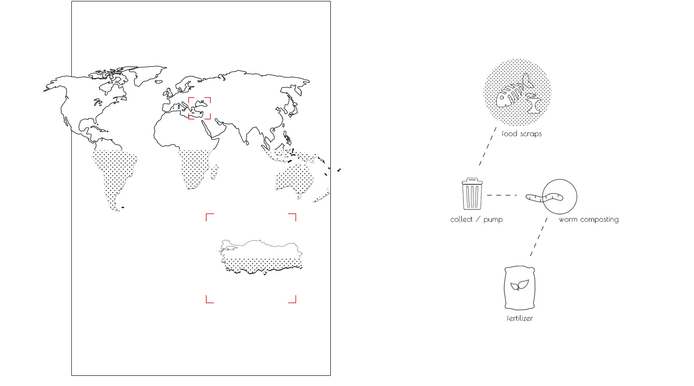
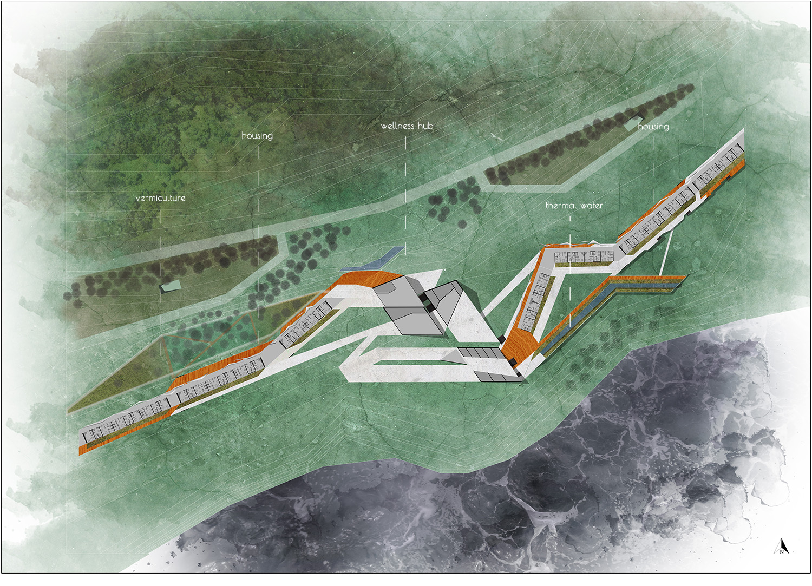
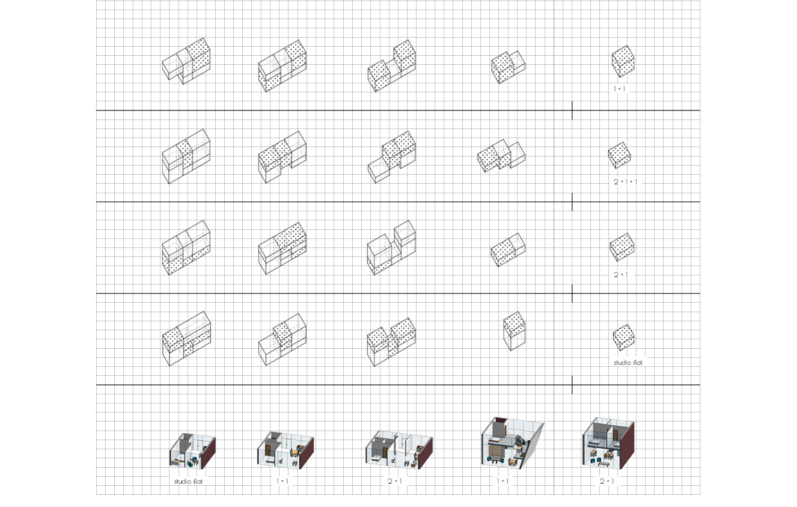
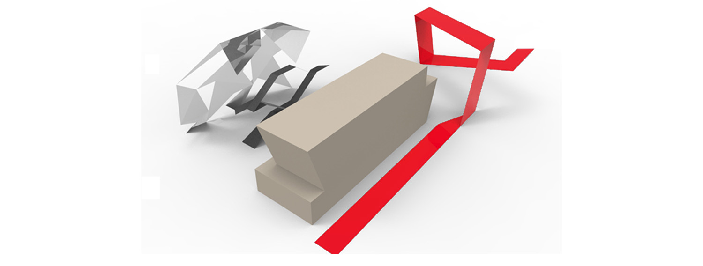
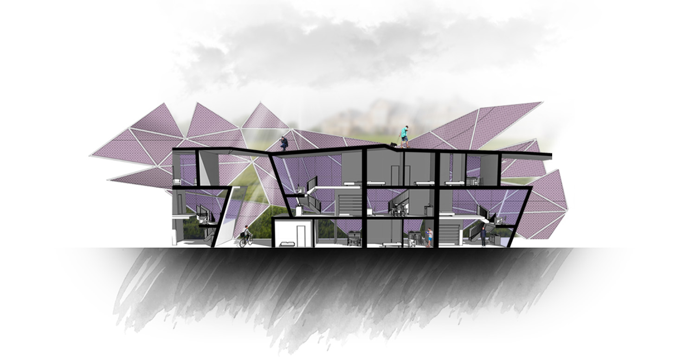
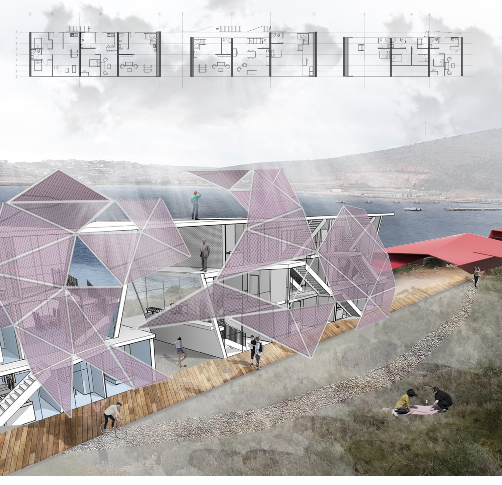
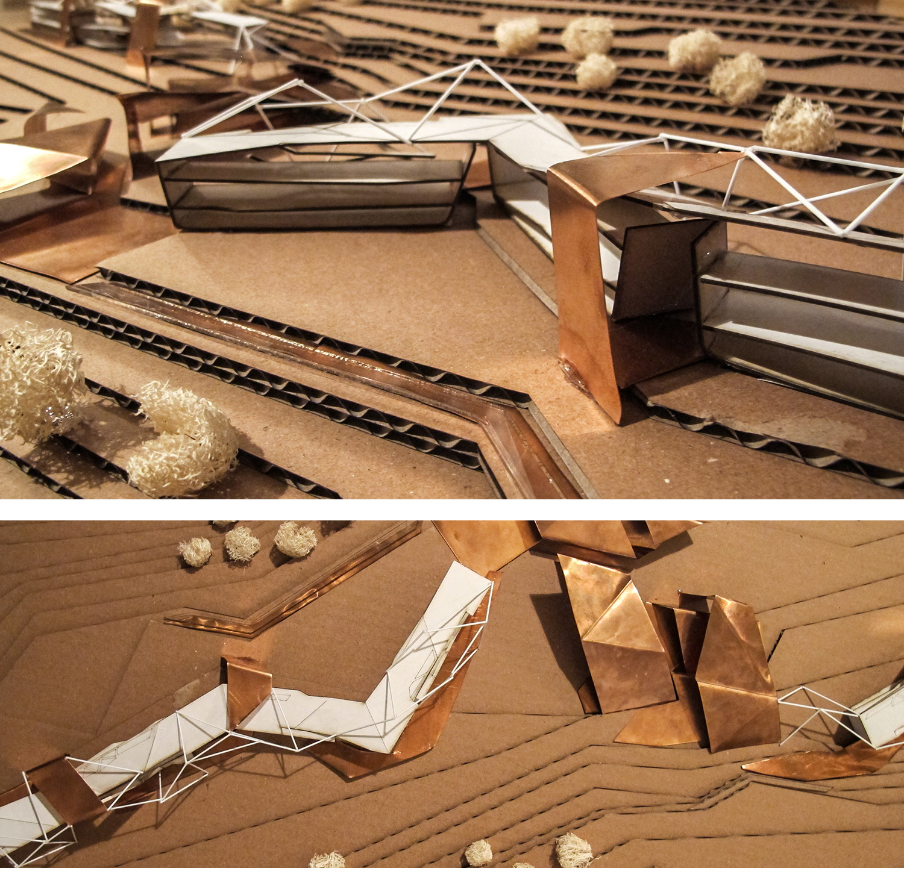

Vermiculture /seaside housing
| _university | METU, Turkey |
| _semester | BSc in Architecture, 3rd year design studio |
| _year | 2016 |
| _location | Çeşme, İzmir, Turkey |
| _author(s) | Orçun Yazıcı |
Proposal's starting point is to create a sustainable housing that benefits from the regional characteristics of
the site. Every year, approximately one third of the food production in the world is lost or wasted, and it is
roughly equal to 1.3 billion tones. Household food waste covers the important percentage of this situation.
'Vermiculture' is the cultivation of earthworms, using worms to convert organic waste into fertilizer. Project's
aim is to integrate organic waste-fertilizer process into housing infrastructure with the underground pumping
systems. As a result, while reducing food waste, agricultural fields of Çeşme can benefit from the fertilizer
produced by worms.






